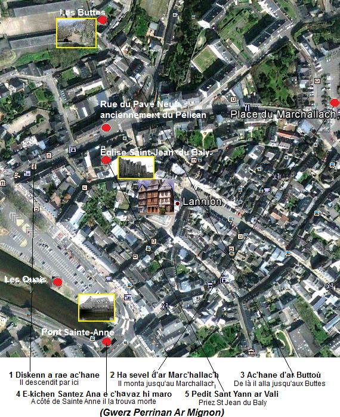

L'orpheline de Lannion
The Orphan of Lannion
Dialecte de Tréguier
|
et par des laveuses de Lannion , selon l'"argument" de toutes les éditions. . sans titre (ou "Perinaik Lanugen") pp. 157-158, . "Perinaïk Lannion" p. 231 . et 1 fois, sous le titre "Perinaïk", dans le carnet N°2, page 31. - Sous forme manuscrite : . par de Penguern: BN Tome 89, ff. 153-155: "Perinaik Ar Mignon" (Henvic, 1851, publié dans "Gwerin", t. 5); BN tome 90, ff. 120-121: "Perinaik Lanhuon" (Taulé, 1851, publié par "Dastum", 1983, p. 51). . par Lédan, II, pp. 212-214 :" Gwers Perinaik ar Mignon". - Publié sous forme de feuille volante "Gwerz Perrinan ar Mignon" (N° 712 du "Catalogue des feuilles volantes" d'Ollivier, p.165): feuille contenant 17 couplets , publiée à Lannion chez J. Muger-Le Goffic (entre 1870 et 1880). - Publié dans des recueils: . par F. Luzel, dans "Gwerzioù 2": "Perinaig ar Mignon (Pluzunet, 1868); "Perinaig Mignon (Duault, fragment). . par Souvestre dans ses "Derniers Bretons" (1836), t.II, pp. 250-252: "Mariannic" (en traduction, sans doute adapté de la version Lédan). - Publié dans des périodiques : . par J-M. Cadic, dans "Revue de Bretagne et Vendée, 1892.2": "Er vatèh Perrinig". . par F. Cadic dans "Mélusine, VII, 1894" puis dans "La Paroisse bretonne de Paris, mai 1906": "Ir gér a Lanvion" (Pontivy, et Locoal-Mendon, fragment). Cette liste, reprise de l'ouvrage de M. Donatien Laurent n'est pas exhaustive. Comme on le verra (au chapitre "Fiabilité des gwerzioù"), Mme Eva Guillorel a recensé au total 43 versions de cette gwerz! |
 |
and by Lannion washerwomen , as stated in the "argument" to this song in all 3 editions. . untitled (or "Perinaik Lanugen") pp. 157-158, . and "Perinaïk Lannion" p. 231 . and one time, titled "Perinaik", in the 2nd MS, page 31. - In handwritten form : . by de Penguern: BN Book 89, ff. 153-155: "Perinaik Ar Mignon" (Henvic, 1851, published in "Gwerin", t. 5); BN Book 90, ff. 120-121: "Perinaik Lanhuon" (Taulé, 1851, published by "Dastum", 1983, p. 51) . by Lédan, II, pp. 212-214:" Gwers Perinaik ar Mignon". - Published as a broadside sheet "Gwerz Perrinan ar Mignon" (N° 712 in the Ollivier "List of Breton broadsides", p.165): the broadsisde song has 17 stanzas; it was published in Lannion by J. Muger-Le Goffic (between 1870 and 1880). - Published in collections: . by F. Luzel, in "Gwerzioù 2": "Perinaig ar Mignon (Pluzunet, 1868); "Perinaig Mignon (Duault, fragment). . by Souvestre in his book "The last Bretons" (1836), t.II, pp. 250-252: "Mariannic" (apparently translated from the Lédan version). - Published in periodicals : . by J-M. Cadic, in "Revue de Bretagne et Vendée, 1892.2": "Er vatèh Perrinig". . by F. Cadic in "Mélusine, VII, 1894", then in "La Paroisse bretonne de Paris, mai 1906": "Ir gér a Lanvion" (collected in Pontivy and a fragment in Locoal-Mendon). This list copied from M. Donatien Laurent's book is not exhaustive. As stated further below (in the chapter titled"Trustworthiness of the gwerzioù"), Mme Eva Guillorel has found no less than 43 different versions of this gwerz! |
Mélodie - Tune
(Mode dorien)
La mélodie est pratiquement la même que celle des Bleus
| Français | English |
|---|---|
|
1.En cette année 1693
Un malheur est arrivé dans le bourg de Lannion! 2 Dans le bourg de Lannion, en une hôtellerie A Perrine Mignon qui y était servante. 3. - Donnez-nous à souper, hôtesse: tripes fraîches, Viande rôtie et bon vin à boire! - 4. Quand chacun d'eux eut bu et mangé tout son soûl: - Voici de l'argent, hôtesse, comptez blancs et deniers! 5. Voici de l'argent, hôtesse, comptez blancs et deniers! Votre servante et une lanterne pour nous reconduire chez nous!- 6. Quand ils furent un peu plus loin sur le grand chemin Ils se mirent à parler bas en regardant la jeune fille. 7. - Belle enfant, vos dents, votre front et vos joues Sont blancs comme l'écume des vagues, sur le rive. 8. -Maltôtiers, je vous prie, laissez-moi comme je suis! Laissez-moi comme Dieu m'a faite! 9. Et si j'étais cent fois plus belle, oui, cent fois plus belle encore, Je ne serais pour vous, messieurs, ni mieux, ni pire. 10. - A en juger par vos gentilles paroles, mon enfant, je crois Que vous avez été à l'école des gens de Bégard, ou à celle des clercs. 11. A en juger par vos gentilles paroles, mon enfant, je crois Que vous êtes allée au couvent apprendre à prêcher avec les moines. 12. - Au couvent de Bégard je ne suis pas allée apprendre à prêcher Ni ailleurs, croyez-moi, avec les clercs. 13. Mais chez moi, au coin de l'âtre de mon père J'ai appris toutes sortes de préceptes salutaires. 14. - Jetez là votre lanterne et éteignez votre lumière. Voici une bourse pleine d'argent; si vous voulez, elle est à vous! 15. Ce n'est pas moi qui ferai la fille qui va par les rues de la ville A qui l'on donne douze blancs et encore dix-huit deniers. 16. J'ai pour frère un prêtre de la ville de Lannion. S'il entendait ce que vous dites, son coeur se briserait. 17. Je vous en prie, maltôtiers, faites-moi la grâce De me jeter dans la mer plutôt que de me faire un tel affront. 18. Pitié, messieurs, plutôt que de me faire un tel chagrin, Ayez la bonté de me mettre vivante en terre. - 19. Perrine avait une maîtresse pleine de bonté Qui restait près du foyer à attendre sa servante. 20. Elle resta près du foyer, sans se coucher Jusqu'à ce que sonnent deux heures du matin. 21. - Levez-vous donc, insouciants, levez-vous donc, sénéchal, Pour aller secourir une jeune fille qui nage dans son sang! - 22. On la trouva morte près de la croix de Saint-Joseph. Sa lanterne était auprès d'elle, et la lumière brûlait toujours. En caractères gras : Strophes sans équivalents dans les carnets de La Villemarqué. |
1. In the year 1693
A murder was committed in Lannion town. 2. In Lannion town, in an inn. The victim was Perrine Mignon, who was servant there. 3. - Give us a supper, goodwife: fresh tripe, Roast and good wine for drink. - 4. When everybody had drunk and eaten their fill: - Here is your money, goodwife, in shillings and pence! 5. Here is your money, goodwife, in shillings and pence! Tell your servant to take a lantern and to see us home!- 6. They were not a long way off on the highroad, When they started whispering to one another, glancing at the girl. 7. - Charming girl, your teeth, your brow, your cheeks Are as white as the foam of the waves on the shore. 8. - Tax collectors, please, leave me alone! Allow me to be the way God made me! 9. And for being a hundred times prettier, yes, a hundred times, I would be none the better or the worse to you. 10. - Judging by your clever words, my girl, I think You were taught by the monks of Bégard or by their clerks. 11. Judging by your clever words, my girl, I think At their convent you were taught the art of preaching by their monks. 12. - I was taught to preach, neither at Bégard convent Nor elsewhere, believe me, neither by laymen, nor by clerks. 13. But at home, before my father's hearth I learnt all sorts of profitable precepts. 14. - Throw away, here, your lantern and put off your light. Here is a purse full of money for you, if you want. 15. - I am not the kind of girls who walk in the town streets To whom they give twelve shillings and eighteen pence to boot. 16. My brother is a priest in Lannion. If he heard what you say, his heart would be broken. 17. So, please, tax collectors, grant me a favour And throw me into the sea rather than doing me such offence. 18. Please, gentlemen, rather than doing me such disgrace Be so kind as to bury me alive in the earth! - 19. Perrine had a mistress who was a good woman. She sat up by the hearth waiting for her maid to return. 20. She sat up by the hearth instead of going to bed Until the bell rang two o'clock in the morning. 21. - Get up, careless people! Constable, get up! And succour a girl who is lying in a pool of blood! - 22. The lass was found dead near Saint Joseph cross, Her lantern next to her, still burning. In bold characters : Stanzas with no equivalents in La Villemarqué's notebooks. |
Cliquer ici pour lire les textes bretons (versions imprimée et manuscrite).
For Breton texts (printed and ms), click here.

|
Les maltôtiers
On désignait ainsi les collecteurs d'impôts. La maltôte était un impôt levé sous Philippe le Bel (1285 - 1314), pour financer la guerre contre les Anglais. Le mot finit par désigner toute espèce d'impôts, en particulier de droits indus ("mal"+"toldre" du latin "tollere", "enlever"). Le mot "maltouter" ("maltôtier" apparaît en 1606) s'est maintenu en breton moderne pour désigner un douanier, tout en conservant sa signification générale d'agent du fisc. Lequel même en dehors de la Bretagne et même s'il n'est pas en état d'ébriété, peut se révéler très dangereux... Dans l'"argument" introductif au chant, La Villemarqué cite un proverbe qui montre combien cette corporation était impopulaire: "Trois sortes de personnes n'arriveront point au paradis tout droit par le grand chemin: les tailleurs dont il faut neuf pour faire un homme ("nav c'hemener evit ober un den"), les sorciers et les maltôtiers". Précisions apportées par l'"argument" et les "notes" La Villemarqué a rédigé pour cette gwerz qu'il affirme avoir entendu chanter à des laveuses de Lannion, un argument et des notes qu'il laisse inchangés dans les diverses éditions du Barzhaz. Il y ajoute toutes sortes de détails dont il ne donne pas la source, mais qui laissent supposer qu'il connaissait d'autres versions, chantées ou non, de la tragédie: "Le sénéchal fit arrêter les deux coupables qu'on trouva ivres et endormis. Le lendemain, ils furent condamnés à être pendus. L'un sifflait en se rendant au lieu du supplice et demandait un biniou pour faire danser la foule. L'autre, moins audacieux, pleurait et le peuple lui jetait des pierres; il se cramponna si fortement avec le pied au pilier de la potence, que le bourreau dut le lui couper d'un coup de hache..." Une foule d'autres versions Outre le Barzhaz Breizh, ce dramatique fait divers a fait, effectivement, l'objet de multiples gwerzioù qui ont été collectées, soit dans la région de Lannion, soit dans d'autres régions de Basse Bretagne, mais nulle part en dehors du domaine bretonnant. En voici quelques exemples:
Le jour de l'année est indiqué précisément: c'est le "Jour des rois", 12 jours après Noël, soit le 6 janvier. Les deux noceurs, dans lesquels on peut voir, suivant l'année qu'on retient, 1695 ou 1795 d'une part, 1820 d'autre part, soit des maltotiers, soit des douaniers, offrent à Perrine de goûter à trois sortes de vin, un chiffre fétiche dans les gwerzioù! Le corps est découvert près du couvent Saint-Joseph. Il semble qu'il soit enterré dans la chapelle Sainte Anne, sous son portrait où a lieu le miracle de la lanterne qui s'éteint. Les manuscrits de Penguern, tome 89 contiennent une autre version intitulée "Perinaïk Ar Mignon". La feuille volante "Perrinan Ar Mignon" Toutefois, la plupart des gwerzioù se conforment à l'indication portée sur un des rares spécimens de gwerzioù ainsi diffusées, une feuille volante imprimée à Lannion chez Mauger-Le Goffic dans la seconde moité du 19ème siècle: "Perrinan ar Mignon" qui précise "War eun ton trist", sur un air triste. C'est le cas de la version chantée par Mari Faro de Penmarc'h , enregistrée en 1979 par l'association Daspugnerien Bro C'hlazig et conservée par l'association Dastum sous le titre "An daou valtouter" (Les deux maltôtiers). La feuille volante, quant à elle, fournit d'autres précisions intéressantes:
La seule trace écrite officielle On est frappé par la concordance entre les noms de lieux et de personnes cités dans ces différentes versions qui ne divergent vraiment qu'en ce qui concerne l'année où ces événements se sont déroulés. On aurait tendance à penser que la Villemarqué a voulu, selon son habitude, vieillir son texte en proposant la date de 1693. On est d'autant plus méfiant que l'indication qu'il donne, quant à l'origine du chant ("des lavandières de Lannion"), semble contredire celle de la table A ("un étranger"). A moins que l'étranger ait servi d'intermédiaire entre cette source première et le jeune barde; ou qu'il s'agisse de deux sources différentes. On a cherché longtemps en vain dans les annales judiciaires des traces écrites de ce tragique fait-divers. C'est à Gwendal Ar Braz , l'auteur de "Gwerz Perinaig Ar Mignon", paru en 1997, que revient le mérite d'avoir songé à consulter les registres de sépultures aux archives municipales de Lannion. On peut y lire en date du 5 janvier 1695 : Une fois n'est pas coutume: alors que les autres versions ont tendance à rajeunir l'événement, et même, on l'a vu pour une d'entre elles, à le dater de l'année en cours, c'est donc la version de La Villemarqué qui est la plus proche de la vérité! L'ironie déplacée de Gourvil Cette contastation contraste avec le commentaire ironique que Gourvil consacre à ce chant du Barzhaz ("La Villemarqué", p.466): "Le chant ainsi intitulé débute par ce vers : “ En cette année mil-six-cent-quatre-vingt-treize...” (1693). Rien ne s'oppose à vrai dire à ce que ce crime erapuleux commis par des « maltôtiers » à Lannion remonte à une telle date. Mais Emile Souvestre, qui en publia une version sous un autre titre dans les “Derniers Bretons” aurait noté celle de 1651, et son texte original, peut-être légèrement tronqué, ne différait pas essentiellement de celui dont disposa La Villemarqué (lequel prétend l'avoir recueilli à Lannion même, alors que sa mère l'inscrivit sur ses Tables comme provenant d'« un étranger»). Mais, avec une touchante docilité, Souvestre décida d'accorder son violon avec celui de son confrère, si bien que dans la première réédition de son ouvrage (1843), la guerz adopta également le millésime donné dans le Barzaz-Breiz. Il ne crut cependant pas devoir, pour autant, changer en Perrinaïk le nom de "Marianic", qui était, dans la version recueillie par lui, celui de la jeune victime." Après avoir signalé que des versions collectées par Lédan et Luzel font état d'autres dates, respectivement 1841 et 1546, Gourvil conclut: "La Villemarqué a poétisé et moralisé la sienne par l'introduction de quelques strophes de son cru; mais le peu d'intérêt de la pièce dispense de s'y attarder davantage." Il est de fait que, sauf erreur, aucune des nombreuses versions de la gwerz n'évoque l'abbaye cistercienne de Bégard (fondée en 1130) et que les strophes 7 à 13 n'ont pas d'équivalent dans les carnets de collecte de La Villemarqué. Mais elles ne sont pas particulièrement moralisatrices. La fiabilité des gwerzioù Selon Eva Guillorel dont la thèse de doctorat intitulée "Complainte et plainte" (consultable en ligne) a fourni l'essentiel des données pour le présent article, "Perrine le Mignon" est l'exemple-type de la gwerz "endogène" , qui circule sur les lieux mêmes de l'évènement qu'elle rapporte (à l'autre bout du spectre, le "Frère de lait" est le type même de la gwerz "exogène"). Elle permet de mesurer le haut degré de fiabilité de la transmission orale, sous cette forme, de faits qui remontent à plus de trois siècles. C'est ainsi que sur la base des versions qui ont cours dans la région de Lannion (Mme Guillorel recense 43 versions pour toute la Basse Bretagne, sans compter le poème du Barzhaz), on peut reconstituer précisément l'itinéraire suivi par l'aubergiste à la recherche de sa servante (Cf. illustration en tête du présent article). On ne trouve de modifications profondes dans les faits (des marins au lieu de maltôtiers, sur une des versions du manuscrit de Keransquer ), les lieux et les noms, que dans les leçons collectées dans des régions plus éloignées de l'"épicentre": Haute et Basse Cornouaille, Pays Bigouden. Le phénomène est particulièrement sensible dans le Vannetais, pays de Chouannerie, où les meurtriers deviennent des soldats républicains! La morale du chant noté sur le manuscrit de La Villemarqué devient:
(Voir aussi Komanset eo ar brezel ). Du fait que les archives judiciaires (sénéchaussée de Lannion, présidial de Rennes et du Parlement de Bretagne) ne renferment pas de trace d'une procédure concernant ce meurtre, faut-il pour autant en conclure que ce dramatique fait divers n'a jamais été porté en justice et que la description détaillée que fait La Villemarqué de l'arrestation des coupables par le sénéchal, puis de leur exécution, est sortie tout droit de son imagination? Ici encore, on ne peut que regretter amèrement qu'il n'ait pas songé à citer ses sources! |
The "Maltôtiers"
The "maltôtiers" were tax collectors. The "maltôte" was a tax levied by Philip the Fair (1825 - 1314) to cover the expenses of the war against England. Then it applied to all sorts of unwarranted taxes ("mal"= "ill"+"toldre"="to levy"). "Maltouter" (the word "maltôtier" appeared in 1606) is still in use in modern Breton to name a customs officer but also any tax official (who also may prove very obnoxious, even outside Brittany, whether they are or are not free of intoxication...) In the "argument" introducing the song, La Villemarqué quotes a saying showing how unpopular this calling was: "Three kinds of humans wont go straight away to paradise: the tailors, since "nine of them are needed to make a man" ("nav c'hemener evit ober un den"), the sorcerers and the "maltôtiers". Other details found in the "Argument" and the "Notes" La Villemarqué claims to have learnt this lament from the singing of Lannion washerwomen. He wrote for it an "argument" and "notes" which he left unchanged in all three editions of the Barzhaz. He included many particulars, without revealing his information source, so that we may assume he knew other versions, sung or not, of the tragedy. "The Seneschal (chief of the police) captured the two culprits who were found sleeping it off. The next day they were sentenced to hanging. One of them whistled when marching towards the scaffold and asked for bagpipes to entertain the audience. The other was less unruffled: he cried and people hurled stones at him. He clung so firmly his leg to the shaft of the gallows that the executioner had to chop it off with an axe..." A lot of other versions Beside the Barzhaz Breizh, this dramatic event actually gave rise to no end of laments collected either in the Lannion area, or in other districts of Lower Brittany, but nowhere outside the Celtic speaking region. Here are a few examples:
On the other hand, the day of the year is clearly stated: the "Twelfth day" after Christmas, i.e. the 6th of January. The two revellers who were, depending from the year considered, 1695 or 1795, or else 1820, inland revenue or customs officers, offer the poor girl to taste three kinds od wine, whereby "three" is an emblematic figure in the "gwerzioù" (laments)! The body is found near Saint Joseph Convent. It was apparently buried in Saint Anne's chapel, underneath the girl's portrait, where the "miracle of the light" took place. In addition to this, the Penguern MS collection, part 89, has another version titled "Perinaïk Ar Mignon". The broadside "Perrinan Ar Mignon" But the widest spread rhythm indication is embodied in a seldom specimen of a gwerz that circulated as a broadside printed in Lannion by Mauger-Le Goffic in the second half of the 19th century. It goes by the title "Perrinan ar Mignon, to be sung to a sad tune". This applies to a version sung by Faro of Penmarc'h , recorded in 1979 by the Daspugnerien Bro C'hlazig Society and kept in the sound archives of the "Dastum" society under the title "An daou valtouter" (The Two Excisemen). As for the broadside, it gives relevant precisions:
The only official written record There is a striking agreement of the diverse versions as to the names of the persons and places they mention. The only diverge about the year where this event happened. One could assume that La Villemarqué, as was his wont, tried, also in the present case, to make the song older by dating the crime to 1693. We are all the more distrustful since he claims to have collected the song "as it was sung by washing women in Lannion", whereas the Table A hints at "a stranger". But it is also plausible that the aforesaid stranger could have conveyed the song from this original source down to the young Bard; or that he availed himself of two different sources. For a long time the usual judicial record have been searched in vain for written traces of this tragic, though trivial event. It was Gwendal ar Braz , the author of "Gwerz Perinaig Ar Mignon", published in 1997, who deserved the credit of a new idea: looking up the burial records in the archives of Lannion town. There he found, for the date 5th January 1695 the following entry: Her body was buried next day in Lannion parish church, Saint John of Baly". Just the once will not hurt! While all other versions tend to make the story younger or even, as we saw for one of them, to ascribe to it a date from the current year, La Villemarqué's dating is the most accurate! Gourvil's misplaced irony This statement contrasts with the ironic comment that Gourvil devotes to this Barzhaz song (cf. "La Villemarqué", p.466): "This song begins with the verse: “In the year one thousand six hundred and ninety-three...” (1693). Nothing prevents us, in fact, from dating back this sordid crime committed by “maltôtiers” in Lannion to such a date, but Emile Souvestre, who published a version under another title in the “Derniers Bretons” would have noted that of 1651, and his original text, perhaps slightly truncated, would not differ, as a whole, from the one presented by La Villemarqué (who claims to have collected it in Lannion itself, even though his mother recorded it on her "Tables" as sung by “an unknown person”). But, with touching docility, Souvestre decided to "tune his violin with that of his colleague", to the effect that in the first reissue of his work (1843), the guerz also adopted the year given in the Barzhaz-Breizh. However, he did not believe it necessary, to change to "Perrinaïk" the name "Marianic", which was, in the version collected by him, that of the young victim." After pointing out that versions collected by Lédan and Luzel mention other dates: 1841 and 1546 respectively, Gourvil concludes: "La Villemarqué poeticized and moralized his song by the introduction of a few stanzas of his own; but we do not need to dwell on this commonplace piece any further." It is a fact that apparently none of the numerous versions of the gwerz mentions the Cistercian abbey of Begard (founded in 1130) and that stanzas 7 to 13 have no equivalent in La Villemarqué's collecting books. But they are not particularly moralistic. . Trustworthiness of the "gwerzioù" As stated by Eva Guillorel , whose doctoral thesis titled "Lament and complaint" - which exists as online PDF files -provided most of the material for the present article, "Perrine Le Mignon" is a typical "endogenous" gwerz, i.e. a lament that circulated in the very area where the events to which it refers took place (at the other end of the spectrum, The Fosterbrother" provides a standard for "exogenous" gwerzioù). It highlights how reliable oral tradition is, even over more than three centuries, when conveyed by this original vehicle. From the investigation of the versions recorded in the Lannion district (which are part of the 43 variants extant in the whole of Lower Brittany, not including the Barzhaz poem) we can, for instance, precisely trace the innkeeper on its wandering about the streets of Lannion, in search of his maid (see the illustration above). Significant changes concerning the facts (for instance, one of the two versions in the Keransquer MS mentions "martoloded",i.e. sailors", instead of "maltoterien", i.e. taxmen), the places or the names are recorded only in areas that are remote from the "epicentre": Upper and Lower Cornouaille, "Pays Bigouden". It is particularly evident in the Vannes district, a birthplace for the Chouan uprisings, where the local version of the song makes of the murderers soldiers of the Republic! Therefore the concluding moral is now:
(See also Komanset eo ar brezel ). Since the judicial archives (Lannion constabulary, Rennes presidial chancery and Parliament of Brittany) have kept no trace of the trial of the perpetrators of this crime, are we to infer that this dramatic event never was reported to Justice and that the detailed narrative made by La Villemarqué of the arrest by the constable, then of the execution of the culprits is the fruit of his imagination? Here again, we cannot but bitterly regret that he failed to quote his sources. |
Arrangement Christian Souchon
Ton doubl kanet gant ar Vreudeur Morvan